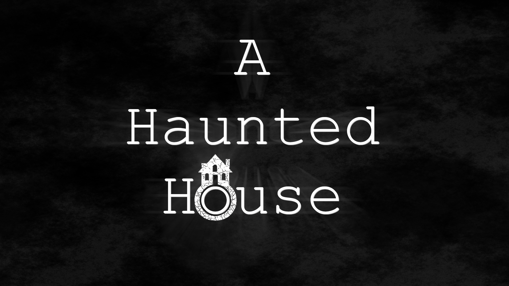

Click the logo to downloadA Haunted House
Inspired by classic survival horror. You play as paranormal investigator Eerie Grey, summoned to a remote house under suspicious circumstances — find the source of the haunting and make it out alive.
Windows
Survival Horror
Unreal Engine
18+
Free
Download ↗